تجربتي في الهجرة
الرحلة، الوصول، الخطوات الأولى في مكان جديد.
في أوبونتو كناريا نؤمن بأن كل قصة يمكن أن تُلهم وتقرّب بين الثقافات وتساهم في بناء مجتمع أكثر انفتاحًا وتعددًا ثقافيًا.

بقلم ياسين إ.
31 عامًا · المغرب

في أوبونتو كناريا، نؤمن بأن لكل شخص قصة تستحق أن تُسمع.
من خلال أصوات العالم، نريد أن نفتح مساحة يمكن فيها للأشخاص أنفسهم مشاركة تجاربهم وثقافاتهم وأحلامهم بصوتهم الخاص، مساهمين بذلك في بناء مجتمع أكثر انفتاحًا وتنوعًا وتعددًا ثقافيًا.
القصص التي ننشرها لا تدّعي تمثيل تجربة جميع المهاجرين. فكل قصة تعكس واقعًا شخصيًا، له ظروفه وتحدياته وآماله الخاصة. وهذا التنوع في الأصوات هو بالضبط ما يثري هذا المشروع.
اليوم نشارككم شهادة ياسين إ.، البالغ من العمر 31 عامًا، وهو شاب مغربي يحدثنا عن رغبته في العمل ومساعدة والديه وبناء مستقبل أفضل دون تعريض حياته للخطر.
اسمي ياسين وهذا حلمي
أنا ياسين إ.، عمري 31 عامًا وأعيش في المغرب.
مثل الكثير من شباب بلدي، أحلم بأن تتاح لي فرصة العمل والعيش بكرامة وبناء مستقبل أفضل.
وضعي الاقتصادي صعب، ووالداي أصبحا مسنّين. إنهما بحاجة إلى الأدوية والدعم لمواجهة نفقات كل يوم. أكبر أمنياتي هي أن أتمكن من مساعدتهما ومنحهما حياة أكثر هدوءًا.
حاولت شق طريقي في المغرب، لكن ادخار ما يكفي لإنشاء مشروع صغير أمر بالغ الصعوبة. فرغم الجهد والعمل، غالبًا ما يكون الدخل بالكاد كافيًا لتغطية الاحتياجات الأساسية.
هناك أمر يؤثر كثيرًا في أحلام العديد من الشباب المغاربة: أن نرى أصدقاء أو أقارب أو معارف ينجحون في تغيير حياتهم بالهجرة. هذه القصص تجعلنا نفكر بأنه ربما تتاح لنا نحن أيضًا فرصة.
أحد هذه الأمثلة بالنسبة لي هو صديقي يوسف.
نشأ يوسف في قرية صغيرة بالمغرب. لسنوات بحث عن عمل دون جدوى، بينما كان يرى والديه يتقدمان في السن وتزداد نفقات الحياة والأدوية. كان حلمه بسيطًا: العمل بكرامة، ومساعدة أسرته، وبناء مستقبل أفضل.
ويائسًا من انعدام الفرص، وصل إلى إسبانيا عبورًا من فنيدق إلى سبتة. كان قرارًا شديد الخطورة عرّض حياته للخطر، وهو نفسه لا ينصح به أحدًا اليوم. وعند وصوله، تلقى مساعدة من جمعيات قدّمت له ملابس وطعامًا ومكانًا للنوم. لاحقًا تمكن من التنقل، ووجد عملاً، ومع مرور السنوات، سوّى وضعه القانوني.
وبجهد كبير، تمكن من استئجار مسكن وإرسال المال شهريًا لوالديه ليتمكنا من شراء أدويتهما والعيش بمزيد من الطمأنينة. بل استطاع أن يبني لهما منزلاً.
لكن يوسف لا ينسى أبدًا من لم يحالفهم الحظ نفسه. فبعضهم لا يزال ينتظر فرصة، وآخرون فقدوا حياتهم في محاولة الوصول إلى أوروبا عبر طرق خطيرة.
ولهذا يقول لي دائمًا: «الأحلام جميلة، لكن علينا أن نسعى إليها بطرق آمنة وقانونية، لأن الحياة تساوي أكثر بكثير من أي حلم.»
قصته تُلهمني، ليس لأنه عبر البحر، بل لأنه اليوم يستطيع أن يعيش من عمله ويساعد أسرته. كما تذكّرني بالثمن والمخاطر التي يدفعها كثيرون حين لا يجدون بدائل.
حلمي ليس أن أكرر ذلك الطريق. فإن أتيحت لي يومًا فرصة الذهاب إلى إسبانيا، أريد أن أفعل ذلك بطريقة قانونية، مع احترام القوانين، والعمل بجد، والاندماج في المجتمع. أريد أن أثبت أنني قادر على المساهمة من خلال عملي وبناء مستقبلي بطريقة آمنة ومسؤولة.
لا أطلب الشفقة. أتمنى فقط أن تتاح لي يومًا فرصة العمل والعيش بكرامة ورعاية والديّ، تمامًا كما يتمنى أي شخص أن يفعل من أجل أسرته.
شكرًا لكم على قراءة قصتي.
في أوبونتو كناريا، نؤمن بأن الاستماع إلى قصص مثل قصة ياسين يساعدنا على أن نفهم أن وراء كل مسار هجرة أشخاصًا لديهم مسؤوليات وقدرات وآمال ومشاريع حياة.
تعكس شهادته واقعًا ملموسًا وقرارًا شخصيًا: السعي لتحقيق أهدافه بطرق آمنة وقانونية، اقتناعًا منه بأنه لا يوجد حلم يبرر تعريض حياته للخطر.
إن الاستماع إلى هذه الأصوات يدعونا إلى النظر إلى الهجرة من منظور أكثر إنسانية، قائم على الاحترام والمعرفة المتبادلة والتعايش بين الثقافات.
ملاحظة تحريرية. نُشرت هذه الشهادة بإذن من صاحبها. وحفاظًا على خصوصيته، تم إخفاء بعض البيانات التعريفية جزئيًا. يعكس المحتوى حصريًا التجربة الشخصية وآراء الشخص الموقّع عليها.

كل تجربة تحمل نظرة فريدة إلى العالم. في أصوات العالم، نريد أن نواصل بناء مساحة يمكن فيها للأشخاص مشاركة قصصهم وثقافاتهم ودروسهم لنتقارب أكثر.
كل شهادة تضيف نظرة مختلفة إلى هذه المساحة. اكتشف قصصًا أخرى تمت مشاركتها في أصوات العالم.
نحن لا نبحث عن صحفيين. نبحث عن أشخاص يرغبون في مشاركة تجربتهم وثقافتهم ومعرفتهم لبناء جسور بين الثقافات.
الرحلة، الوصول، الخطوات الأولى في مكان جديد.
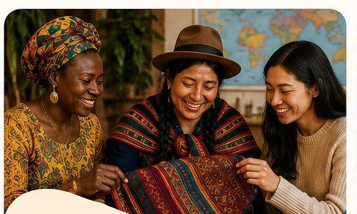
ما تحمله معك من أرضك الأصلية.
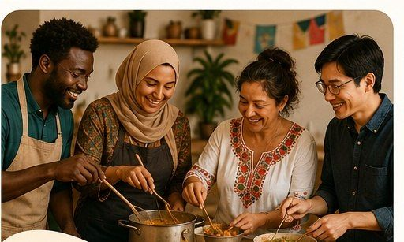
وصفات واحتفالات وعادات تمنح الهوية.
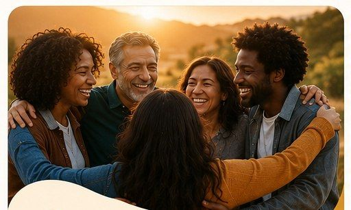
حكايات عن الصمود والمجتمع وبدايات جديدة.
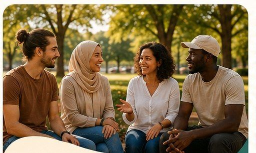
لقاءات بين الثقافات في الحياة اليومية.
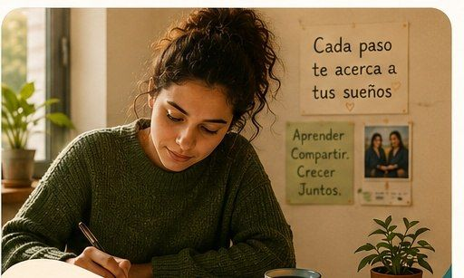
ما تعلمته خلال مسار اندماجك الخاص.

باللغة التي تشعر فيها براحة أكبر.
نعتني بالصياغة دون تغيير صوتك.
في مدونة أوبونتو كناريا، باسمك.
مع آلاف القراء عبر شبكاتنا.
اختر الموضوع الأقرب إلى قصتك. هذه مجرد بعض الأفكار.
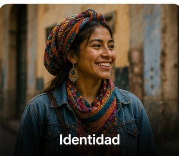
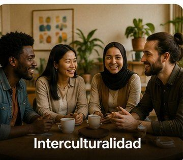
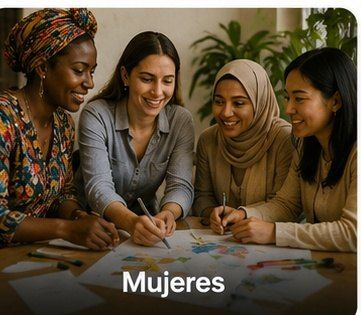
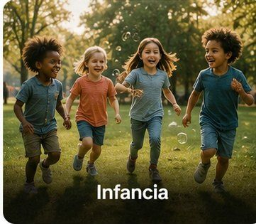
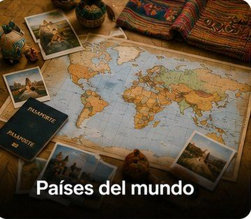
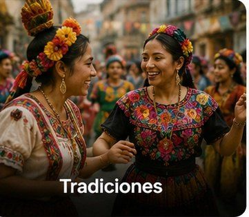
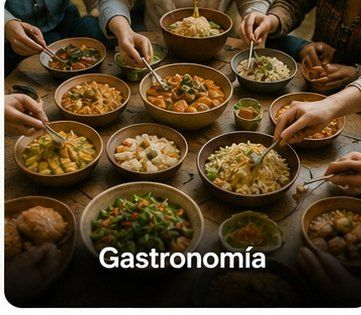
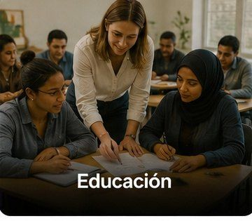
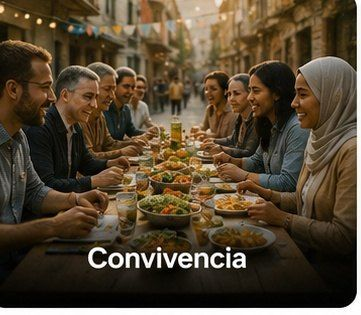

قصتك يمكن أن تمنح الأمل لشخص يبدأ نفس الرحلة.

ثقافتك وتجربتك تُثريان من يقرأك.

كل قصة تساهم في نظرة أكثر انفتاحًا تجاه الهجرة.
لست وحدك: نراجع قصتك ونعتني بها معك خطوة بخطوة، حتى تصبح جاهزة للنشر.

اكتب قصتك بكلماتك الخاصة، باللغة التي تشعر براحة أكبر فيها.
يراجع فريقنا كل التفاصيل معك، مع الحفاظ على صوتك.
ننشر قصتك في المدونة ونشاركها مع آلاف القراء.

الأشخاص المهاجرون لا يتلقون الدعم فقط. بل يولّدون أيضًا المعرفة والثقافة والأمل.
أريد أن أكتبيمكنك أيضًا التواصل معنا عبر البريد الإلكتروني أو زيارة موقعنا. سنردّ عليك بنفس الاهتمام.
أوبونتو كناريا · الاستقبال والاندماج